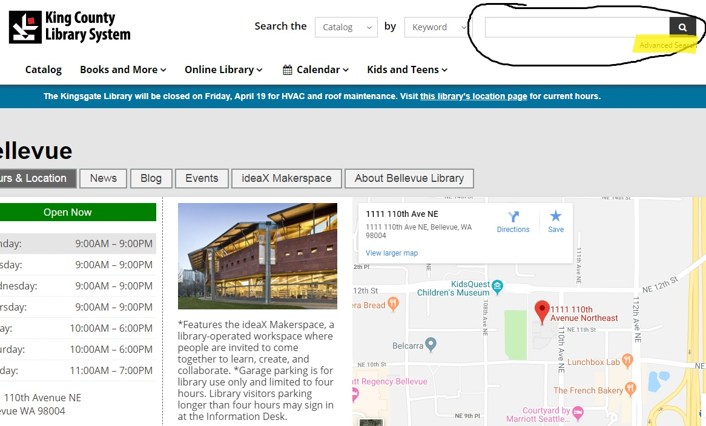
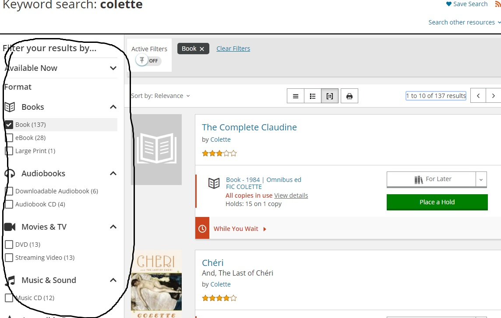
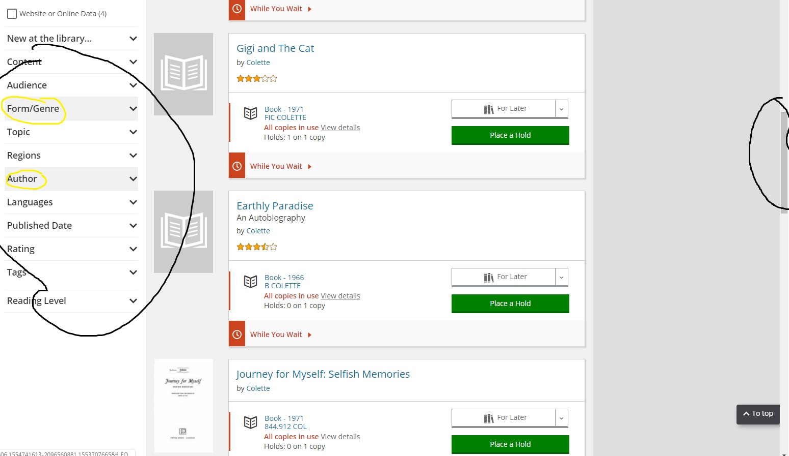

The website I will be analyzing is the usability of Bellevue Library search bar option and results access. The url is https://kcls.org/locations/1492/. The criteria that I will use to test the page will be:
The navigation of the search criteria and breakdown of the search
Does it have visual appeal for obvious information?
Is it free of visual distractions?
Is it effective?
Navigation and Breakdown
The search bar is right at the top of the home page and easy to find. Once typing in a book or author, you do get a number of results with the covers of most books and DVDs. You have the options on the side bar to just show books, DVDs, audio books or e-books. This is a great feature since the results come up in no particular order and are all jumbled together with questionable “relevance” order. That being said, after selecting “books” (an example) that is where the breakdown options stop. There is no specific option to look for author, title or subject like fiction, biography until you scroll to the bottom below the obvious text options for other selections.
  Visual Appeal
The layout of the site is very plain with white background and black text. It is direct; however I would move the bar breakdown for author, genre, and title above the search results since this is what I am used to with most modern sites. It does seem like it would benefit from a layout that would catch the eye when searching for a book or other media material.
Distractions
There are no ads or pop ups which a plus when it comes to government-run sites. At the moment, though, there is an important message box at the top that is a reminder of a library closer. The way it is set up though looks like an error to me and made it seem at first that there was something wrong with my search criteria.
Effectiveness
With getting used to the search bar and its results are effective. You just have to learn how to weed out the thousands of results that come with it and learn where everything is to do that. I would say using a modern approach to the site by switching around the option as to where they are on the page would help a great deal.